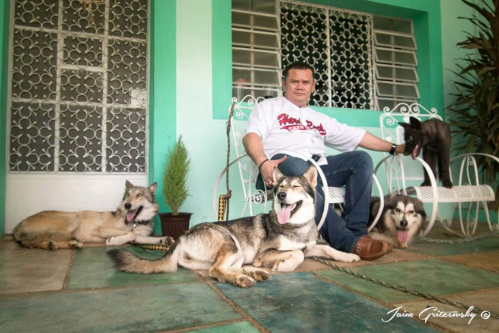

PERSONALIDAD

Es un perro noble y leal con sus dueños y es bueno con niños, aunque puede ser un poco reservado y tímido con extraños
(como lo son la mayoría de lobos), es fácil de manejar y se acostumbra a todo tipo de actividades.
Es un perro activo y ágil, su principal actividad puede ser la de un perro de pastoreo, aunque...El Calupoh es un perro muy ágil y
dinámico pero muy estable y fácil
de manejar que se acostumbra a
todo tipo de actividades, es un
perro leal y noble con la familia,
convive fácilmente con otros
perros y siempre está dispuesto a
agradar a su dueño aunque se
puede presentar como reservado
ante extraños.
<--VOLVER